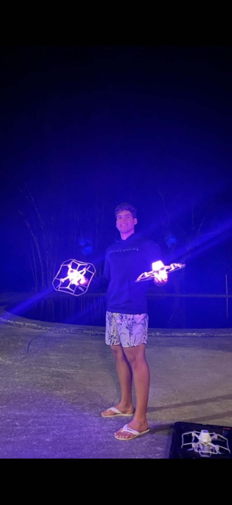

Chapter 01
2024–26
Drone shows
Alok · Pixel Drone · Damoda
Drone Show Engineer · 3D Technical Artist

01 / 05
Alok · 2024–2026
Directed and engineered live drone shows: 3D animation choreographed and synchronized across fleets of up to 1,600 aircraft, performed for live audiences of 100,000.
Pixel Drone · 2024–2026
Built and validated show choreography for commercial drone productions, from 3D animation through flight-ready output.
Damoda · Shenzhen, 2024
Three-month engagement with a Chinese drone-show manufacturer, working across the animation-to-hardware pipeline.
Translated creative concepts into deterministic flight data — procedural design, timing, spatial constraints and physical execution in a system where a bug is visible to a stadium.
Unreal Engine
Blender
Maya
Procedural animation